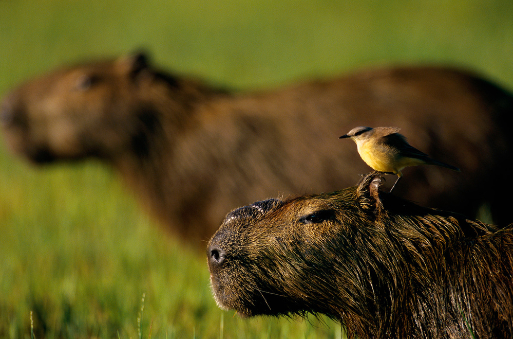
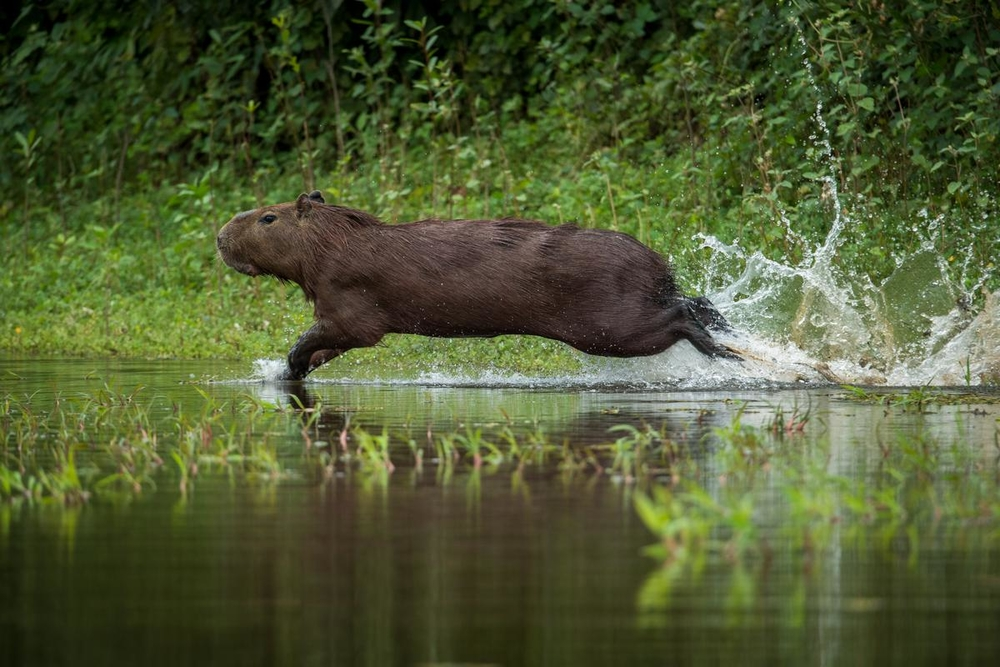
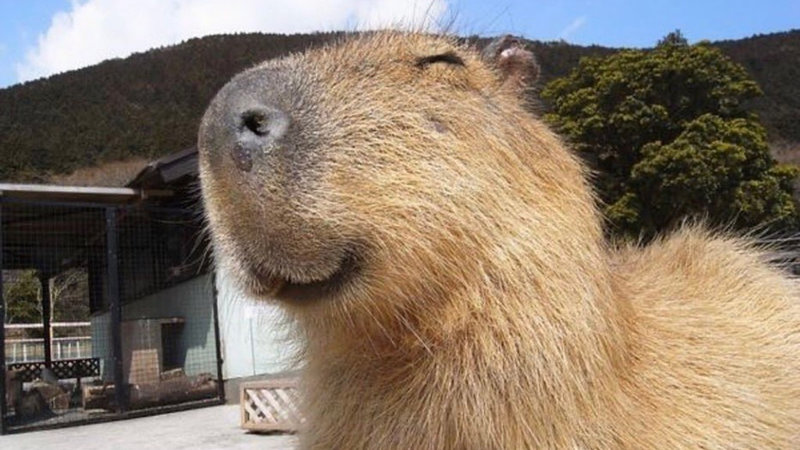
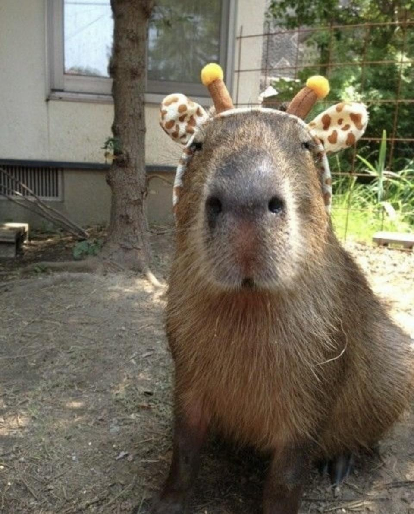
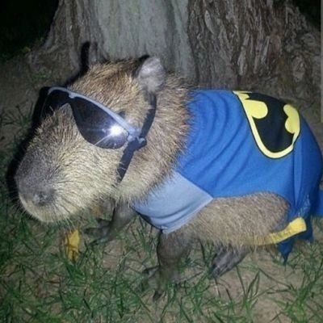
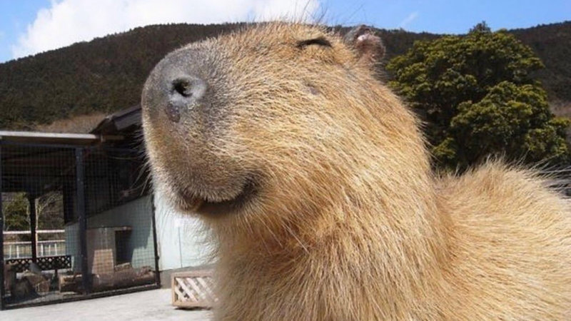
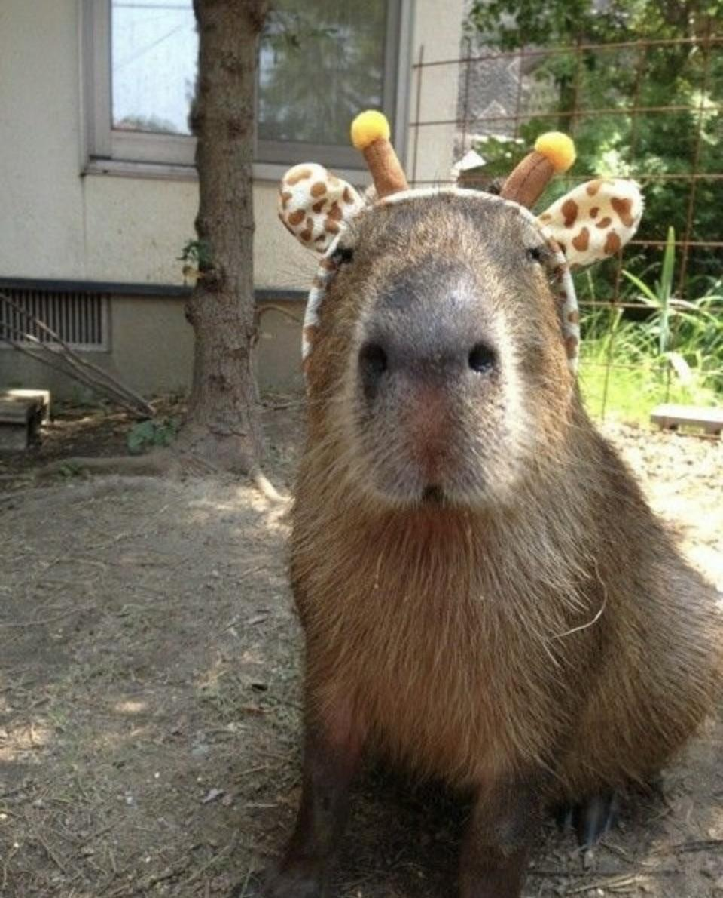
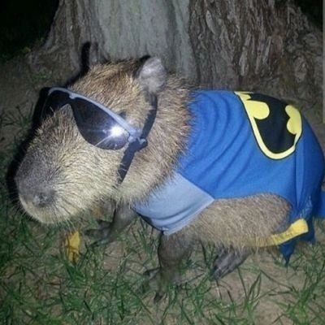

Wat is de Capibara
De Capibara is het grootste knaagdier ter wereld. Een volwassen capibara kan meer dan een meter lang worden en weegt rond de 50 kilogram. Dat is nog eens een uit de kluiten gewassen cavia! Capibara’s leven in Zuid-Amerika. Daar scharrelen ze in verschillende gebieden rond: in bossen, savannes en mangroven bijvoorbeeld. Ze zijn altijd in de buurt van water te vinden. In het water ontsnappen ze aan roofdieren als jaguars en koelen ze af bij hitte. Ook zoeken ze er naar voedsel. De grote knaagdieren zijn grazers en eten onder andere gras en waterplanten.
Capibara’s zijn sociaal. Ze leven in groepen die bestaan uit zes tot zestien volwassen dieren en hun jongen. In dierentuinen blijkt regelmatig dat capibara’s goed samengaan met andere diersoorten: het lijkt erop dat ze weinig problemen hebben met dieren die in hun buurt komen of zelfs op hun rug kruipen.
Als capibara’s grazen, verstoren ze allerlei beestjes, zoals insecten, die in het gras leven. Die wegvluchtende beestjes zijn een makkelijke prooi voor oplettende vogels. Sommige vogels storten zich vanaf de kop of de rug van de capibara op de vluchtende diertjes. Andere vogels blijven op de grond, in de buurt van de kop van de capibara, om de insecten te vangen. Ook zijn er vogels die parasieten eten die op de huid van capibara’s leven, zoals teken. Wanneer capibara’s zo’n tekenetende vogel tegenkomen, gaan ze soms languit liggen. Zo kan de vogel ook de parasieten van de buik en de zijkant van het knaagdier meepikken.

Waarom wil OOK JIJ een Capibara
Capibara's zijn natuurlijk hele mooie beesten dus hier staan een aantal redenen op een capibara te willen.
1 Orgineel: Ken jij iemand die een capibara als huisdier heeft? Nee, ik ook niet. Dit is de perfecte reden om de eerste te zijn in jouw omgeving.
2 Schattig: Capibaras zijn hele schattige dieren, het zijn eigenlijk grote cavia's. Ze zullen ook vogels aan trekken.
3 Prakties: Het is je eigen automatische grasmaaier op vier poten. Ook zal je minder last hebben van insecten in je grasveld, want ze hebben geen hoog gras om in te schuilen voor de vogels.

 




